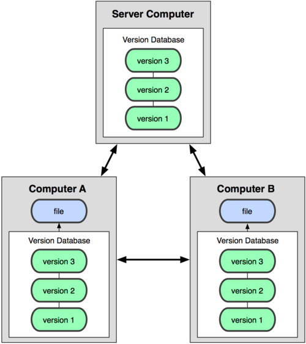

关于版本控制¶
什么是版本控制？我为什么要关心它呢？版本控制是一种记录一个或若干文件内容变化，以便将来查阅特定版本修订情况的系统。在本书所展示的例子中，我们仅对保存着软件源代码的文本文件作版本控制管理，但实际上，你可以对任何类型的文件进行版本控制。
如果你是位图形或网页设计师，可能会需要保存某一幅图片或页面布局文件的所有修订版本（这或许是你非常渴望拥有的功能）。采用版本控制系统（VCS）是个明智的选择。有了它你就可以将某个文件回溯到之前的状态，甚至将整个项目都回退到过去某个时间点的状态。你可以比较文件的变化细节，查出最后是谁修改了哪个地方，从而找出导致怪异问题出现的原因，又是谁在何时报告了某个功能缺陷等等。使用版本控制系统通常还意味着，就算你乱来一气把整个项目中的文件改的改删的删，你也照样可以轻松恢复到原先的样子。但额外增加的工作量却微乎其微。
本地版本控制系统¶
许多人习惯用复制整个项目目录的方式来保存不同的版本，或许还会改名加上备份时间以示区别。这么做唯一的好处就是简单。不过坏处也不少：有时候会混淆所在的工作目录，一旦弄错文件丢了数据就没法撤销恢复。
为了解决这个问题，人们很久以前就开发了许多种本地版本控制系统，大多都是采用某种简单的数据库来记录文件的历次更新差异（见图 1-1）。

图 1-1. 本地版本控制系统
其中最流行的一种叫做 rcs，现今许多计算机系统上都还看得到它的踪影。甚至在流行的 Mac OS X 系统上安装了开发者工具包之后，也可以使用 rcs 命令。它的工作原理基本上就是保存并管理文件补丁（patch）。文件补丁是一种特定格式的文本文件，记录着对应文件修订前后的内容变化。所以，根据每次修订后的补丁，rcs 可以通过不断打补丁，计算出各个版本的文件内容。
集中化的版本控制系统¶
接下来人们又遇到一个问题，如何让在不同系统上的开发者协同工作？于是，集中化的版本控制系统（ Centralized Version Control Systems，简称 CVCS ）应运而生。这类系统，诸如 CVS，Subversion 以及 Perforce 等，都有一个单一的集中管理的服务器，保存所有文件的修订版本，而协同工作的人们都通过客户端连到这台服务器，取出最新的文件或者提交更新。多年以来，这已成为版本控制系统的标准做法（见图 1-2）。

图 1-2. 集中化的版本控制系统
这种做法带来了许多好处，特别是相较于老式的本地 VCS 来说。现在，每个人都可以在一定程度上看到项目中的其他人正在做些什么。而管理员也可以轻松掌控每个开发者的权限，并且管理一个 CVCS 要远比在各个客户端上维护本地数据库来得轻松容易。
事分两面，有好有坏。这么做最显而易见的缺点是中央服务器的单点故障。如果宕机一小时，那么在这一小时内，谁都无法提交更新，也就无法协同工作。要是中央服务器的磁盘发生故障，碰巧没做备份，或者备份不够及时，就会有丢失数据的风险。最坏的情况是彻底丢失整个项目的所有历史更改记录，而被客户端偶然提取出来的保存在本地的某些快照数据就成了恢复数据的希望。但这样的话依然是个问题，你不能保证所有的数据都已经有人事先完整提取出来过。本地版本控制系统也存在类似问题，只要整个项目的历史记录被保存在单一位置，就有丢失所有历史更新记录的风险。
分布式版本控制系统 于是分布式版本控制系统（ Distributed Version Control System，简称 DVCS ）面世了。在这类系统中，像 Git，Mercurial，Bazaar 以及 Darcs 等，客户端并不只提取最新版本的文件快照，而是把代码仓库完整地镜像下来。这么一来，任何一处协同工作用的服务器发生故障，事后都可以用任何一个镜像出来的本地仓库恢复。因为每一次的提取操作，实际上都是一次对代码仓库的完整备份（见图 1-3）。
图 1-3. 分布式版本控制系统
更进一步，许多这类系统都可以指定和若干不同的远端代码仓库进行交互。籍此，你就可以在同一个项目中，分别和不同工作小组的人相互协作。你可以根据需要设定不同的协作流程，比如层次模型式的工作流，而这在以前的集中式系统中是无法实现的。